TECHVESTVENTURES DAILY RISK ALERTS — Emergent News Digest — Nov 14, 2026, 9:00 AM EST ALL RISK REPORTS click TVV Risk Center
TVV RESEARCH DIGEST — November 14, 2026 — 12 desks
1. Major Geopolitical Conflict Developments
- ★ Ukraine: President Zelenskyy said Saturday that the prisoner exchange agreed this week would involve 1,200 to 1,300 people from each side, calling it the main outcome of the Abu Dhabi talks; no date has been set. He said Russian delegates told Kyiv they had no authority to agree an energy ceasefire, and that the US side asked for the first time whether Ukraine would withdraw from Donbas in exchange for NATO membership. Fighting went on: Russian attacks killed 9 and injured 61 across Ukraine over the past day, setting fire to a Kyiv hospital, and a Ukrainian drone strike killed four. Anadolu · LIGA.net · Kyiv Independent · Reuters
- ★ Hormuz and Red Sea (conflicting claims, screen skeptically): Iran's navy and Revolutionary Guards said Saturday that three more oil tankers caught fire after striking mines in the strait while running without tracking systems; there is no independent confirmation. The IRGC also says it shot down a US MQ-1 drone over Qeshm Island. The Houthis say they attacked Riyadh's King Khalid airport and a pumping station on the East-West pipeline; Saudi Arabia has not confirmed the claims. Counterpoint: an industry tracker counts U.S.-escorted transits through the southern corridor at a record 135 in the four days. The New Arab · Middle East Eye · UANI
- ★ Escalation pause: Reuters reports, citing three people familiar with the matter, that Trump has told advisers he may hold off on new strikes on Iran if Tehran and the Houthis make no new provocations. Odds agree: Polymarket's chance that the US–Yemen ceasefire holds through Nov 30 rose from 67.5% in mid-October to 87%, Houthi military action against Israel fell from 24% to 7.5% (see graph). Near-term: bettors expect Houthi fire to stay aimed at Saudi Arabia, not Israel or US ships. The New Arab / Reuters · Polymarket · Polymarket
- ★ Summit week: Trump, Xi Jinping and Vladimir Putin will hold their first trilateral meeting at the APEC summit in Shenzhen, Nov 18–19, the White House confirmed. Officials say a new nuclear arms deal (New START lapsed in February) and the Iran war lead the agenda, but expect no agreement. US and Chinese officials are also working on tariffs and farm purchases before the Trump–Xi meeting. Al Jazeera · CNBC
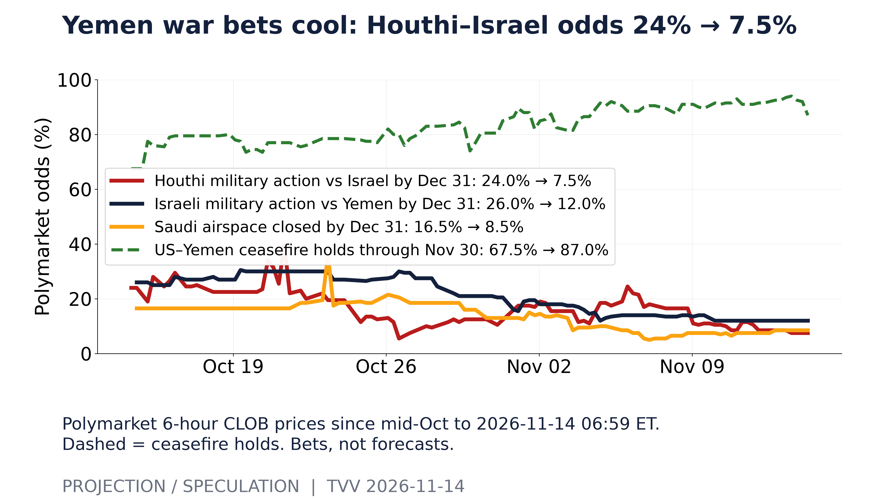
Yemen war bets cool: Houthi–Israel odds 24% → 7.5%. Polymarket 6-hour CLOB prices since mid-Oct to 2026-11-14 06:59 ET. Dashed = ceasefire holds. Bets, not forecasts. [Projection/Speculation; data as of 2026-11-14 06:59 ET] Source: polymarket.com data page
2. Major Terror / Security Incidents
- ★ Pakistan: a suicide car bomb hit a Frontier Corps checkpoint in the Kandawa area of Mastung, Balochistan, killing five people, three militants including the bomber and two civilians, and injuring 13. It also damaged nearby houses and a mosque. The banned Baloch Liberation Army claimed the attack. The Week / PTI · New Indian Express
- ★ Russia: a second car bomb in two days exploded in Moscow, badly wounding Sergei Zavorotniy, a former spokesman for ex-Ukrainian prime minister Mykola Azarov; Russian outlets report he lost his left arm. Russia's Investigative Committee has opened a case, and Ukraine has not commented. DW
- ★ Cyber: CISA's catalog of actively exploited flaws lists 41 Microsoft vulnerabilities added so far in 2026, already above 2025's 39 and 14% of all additions this year; the latest is an Office flaw added Nov 10 (see graph). Windows leads with 15, then Exchange and SharePoint with 10. CISA KEV
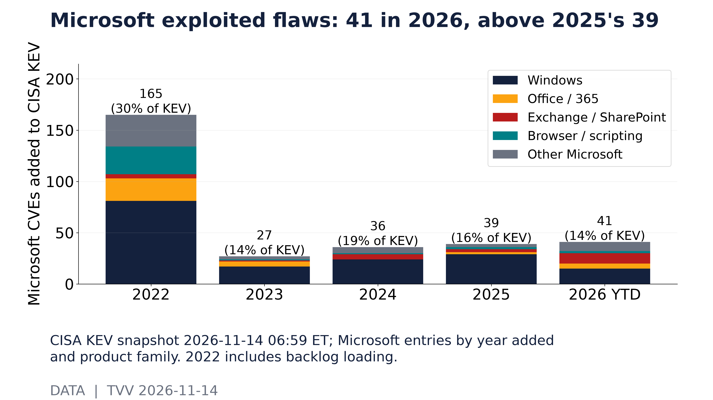
Microsoft exploited flaws: 41 in 2026, above 2025's 39. CISA KEV snapshot 2026-11-14 06:59 ET; Microsoft entries by year added and product family. 2022 includes backlog loading. [Data; data as of 2026-11-14 06:59 ET] Source: cisa.gov data page
3. Earthquakes and Eruptions
- ★ No new M6.0+ quake with significant casualties or damage since the last issue; the largest since Thursday were M5.8 events off Peru's Ica coast and near Kavieng, Papua New Guinea, with no damage reported. USGS counts 13 quakes of M7.0+ in 2026, against a 1976–2025 average of 13.9 a year. Polymarket gives 70% for 14–16 for the year and 28% for 17–19, while a simple Poisson projection at the long-run rate gives 73% and 11% (see graph); implication: bettors price more big-quake risk than history alone. USGS · Polymarket
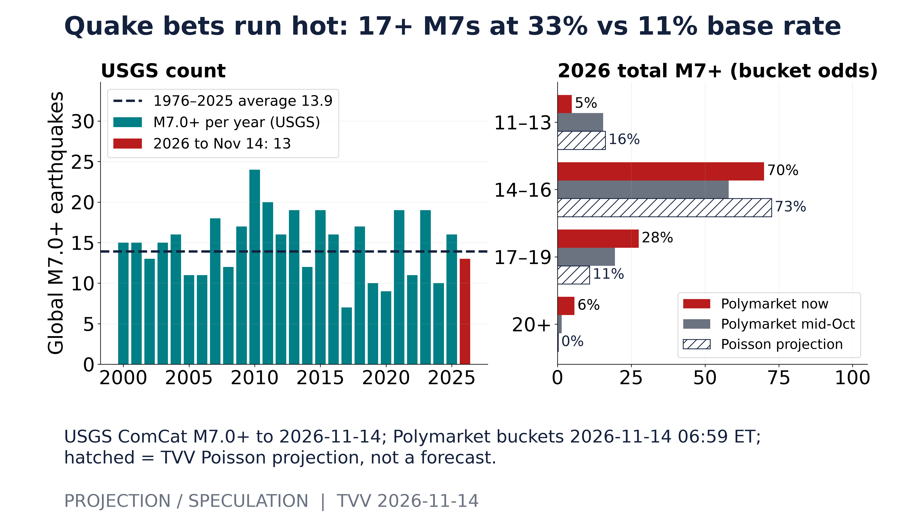
Quake bets run hot: 17+ M7s at 33% vs 11% base rate. USGS ComCat M7.0+ to 2026-11-14; Polymarket buckets 2026-11-14 06:59 ET; hatched = TVV Poisson projection, not a forecast. [Projection/Speculation; data as of 2026-11-14 06:59 ET] Source: polymarket.com data page
4. Solar / Space Weather
- ★ Quiet: the greatest Kp in the past 24 hours was 1, and NOAA expects no storms through Nov 16 (top Kp 3.33, radiation-storm odds 5%). Solar cycle 25 peaked at a smoothed 161 sunspots in October 2024, above cycle 24's 116, and October 2026 read 46; NOAA's prediction falls to 66 smoothed by October 2027 (see graph). Implication: fewer active days ahead, but the declining phase can still bring large storms. NOAA SWPC · NOAA SWPC
- ★ Long-horizon watch: magnetic north keeps drifting toward Siberia in NOAA's measured and modeled data, but no one can predict the timing of a sudden geomagnetic shift. Michael Hentschel's own view: 2035 at the earliest, with critical earth changes along the way. Next weekly globe: Nov 15. NOAA NCEI
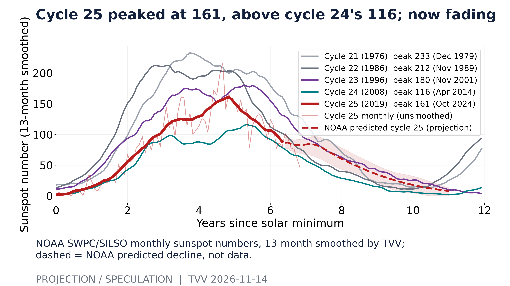
Cycle 25 peaked at 161, above cycle 24's 116; now fading. NOAA SWPC/SILSO monthly sunspot numbers, 13-month smoothed by TVV; dashed = NOAA predicted decline, not data. [Projection/Speculation; data as of 2026-10] Source: services.swpc.noaa.gov data page
5. Critical Infrastructure / Transportation Disruptions
- ★ US airspace halted: the FAA stopped departures nationwide for more than four hours Friday after legacy switches and routers carrying air traffic voice and radar data became overloaded, leaving controllers with intermittent communications and radar. About 3,500 planes were airborne when the airspace was closed. Transportation Secretary Sean Duffy blamed 1980s copper-line equipment, found no evidence of a cyberattack and asked Congress for $50 billion more for modernization; Homeland Security Secretary Markwayne Mullin said new equipment being installed overwhelmed the old system. Delays are expected to last days. Separately, Microsoft says Outlook, Teams and its other services have fully recovered after the outage of more than 24 hours. FAA · Los Angeles Times · Reuters · France 24
- ★ Data-center backlash odds: Polymarket gives near-zero chances of a state data-center moratorium this year (Indiana 2.4%, Ohio 2.5%, North Carolina 1.9%) but about 30% for each by end-2028 (see graph). Implication: bettors see local power and water pushback as a slow-building threat to build plans. The cost is already showing: combined depreciation at Microsoft, Alphabet, Amazon, Meta and Oracle reached $44.6 billion in the third quarter, up from $29.7 billion a year earlier. Polymarket · Polymarket · Polymarket · SEC EDGAR
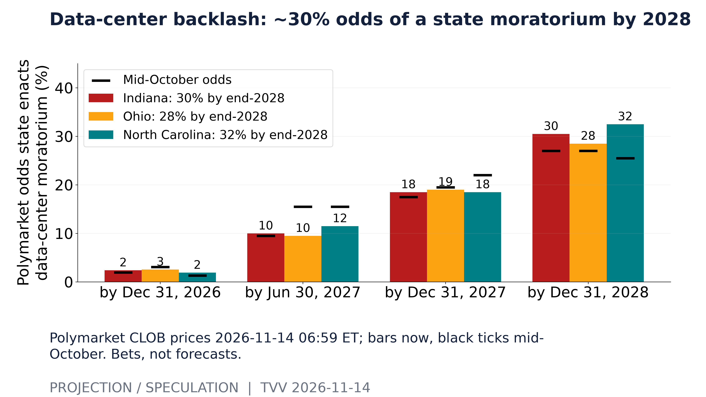
Data-center backlash: ~30% odds of a state moratorium by 2028. Polymarket CLOB prices 2026-11-14 06:59 ET; bars now, black ticks mid-October. Bets, not forecasts. [Projection/Speculation; data as of 2026-11-14 06:59 ET] Source: polymarket.com data page
6. Econo-Metrics
- ★ Hike priced in: traders now see a Fed rate increase at the Dec 9 meeting as certain on CME FedWatch, 89% for a quarter point and about 14% for a half point; San Francisco Fed President Mary Daly said rates will likely need to rise. The 10-year Treasury yield ended near 5.14% after topping 5.17%, the 30-year near 5.47%, and the dollar index reached its highest since April 2025. Core producer prices rose 0.5% in October. CNBC · Reuters / Euronext · Investing.com / Reuters
- ★ Pass-through gap: producer prices are up 6.5% from a year ago against consumer prices at 4.1% (see graph), yet Polymarket gives only 9.5% that any 2026 CPI print tops 4.5%, down from 13% in mid-October, with two prints left. Implication: bettors expect wholesale costs to squeeze margins before they reach shoppers this year. BLS · Polymarket
- ★ Degree no shield: the unemployment rate for college graduates 25 and over averaged 2.6% in the three months to October, up from about 2.0% in 2023, against 3.8% for high-school graduates (see graph). The gap between the two has narrowed since 2019, the group most exposed to AI in white-collar work. BLS via FRED
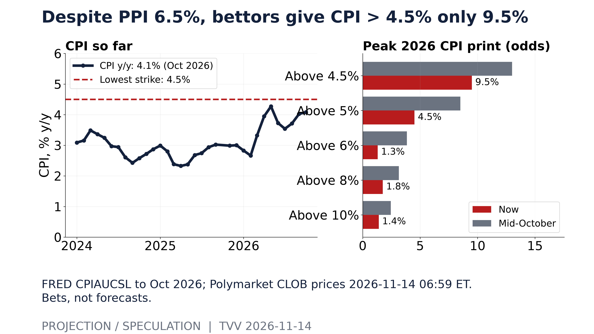
Despite PPI 6.5%, bettors give CPI > 4.5% only 9.5%. FRED CPIAUCSL to Oct 2026; Polymarket CLOB prices 2026-11-14 06:59 ET. Bets, not forecasts. [Projection/Speculation; data as of 2026-11-14 06:59 ET] Source: polymarket.com data page
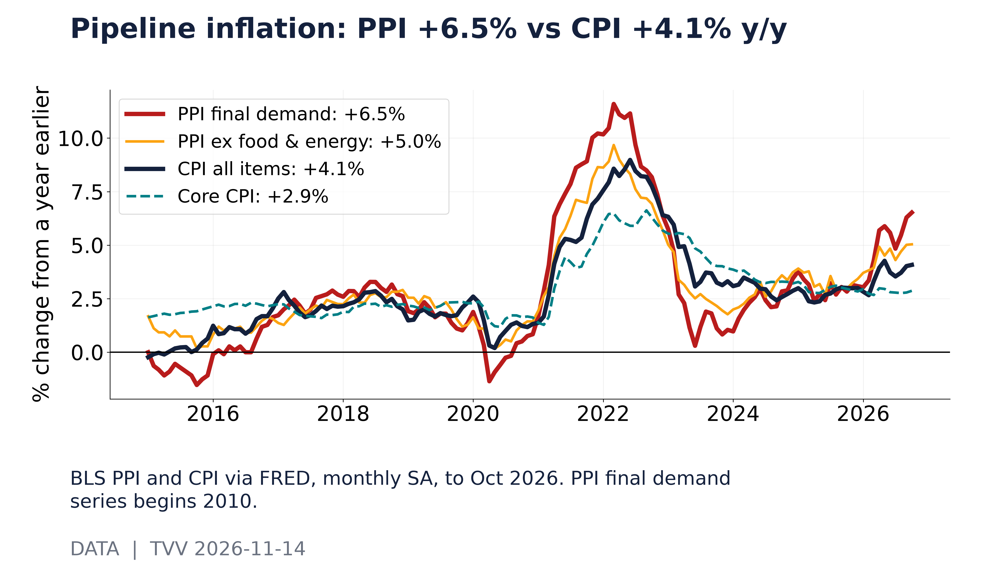
Pipeline inflation: PPI +6.5% vs CPI +4.1% y/y. BLS PPI and CPI via FRED, monthly SA, to Oct 2026. PPI final demand series begins 2010. [Data; data as of 2026-10] Source: fred.stlouisfed.org data page
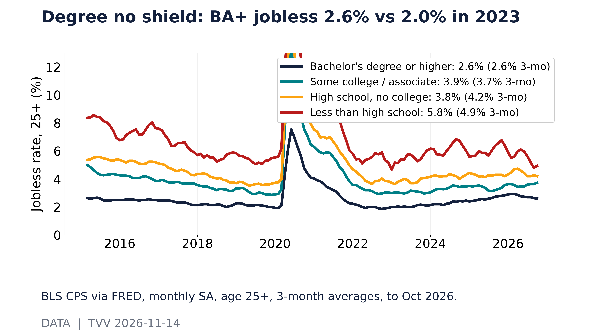
Degree no shield: BA+ jobless 2.6% vs 2.0% in 2023. BLS CPS via FRED, monthly SA, age 25+, 3-month averages, to Oct 2026. [Data; data as of 2026-10] Source: fred.stlouisfed.org data page
7. Epidemic / Bio-Metrics
- ★ Ebola, DR Congo: WHO's emergencies chief says 400 to 500 new infections are still found each week, as cases spread into rural, hard-to-reach areas, though transmission has fallen sharply in earlier hotspots such as Bunia and Mongbwalu. The UN's Ebola coordinator says Allied Democratic Forces fighters have recently killed more people than the virus. The World Food Programme expects 30.3 million Congolese in crisis-level hunger or worse in January–June 2027. UN News
- ★ Measles: CDC counts 5,412 US cases in 2026, the most since 1991, up from 2,289 last year; the last eight weeks averaged 219 a week, a straight-line pace to about 6,900 by Dec 31 (see graph). Polymarket gives 74% to 7,000 or more and 30% to 7,500 or more. CDC · Polymarket
- ★ Pandemic bets fade: Polymarket's chance of a new pandemic declared in 2026 fell from 4.5% to 1.6% since mid-October, and a new COVID variant of concern before 2027 from 13% to 10.5% (see graph). COVID watch: China CDC's October report finds no new variant posing an added public-health risk, with PQ.16.1.1 lineages at 94.6% of sequences and COVID positivity falling to 1.3%; it does not substantiate an SV.2.4 surge. Polymarket · Polymarket · China CDC
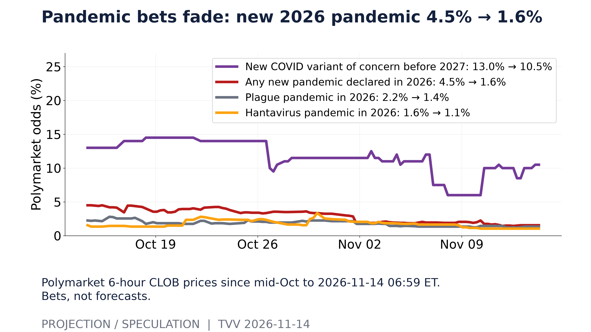
Pandemic bets fade: new 2026 pandemic 4.5% → 1.6%. Polymarket 6-hour CLOB prices since mid-Oct to 2026-11-14 06:59 ET. Bets, not forecasts. [Projection/Speculation; data as of 2026-11-14 06:59 ET] Source: polymarket.com data page
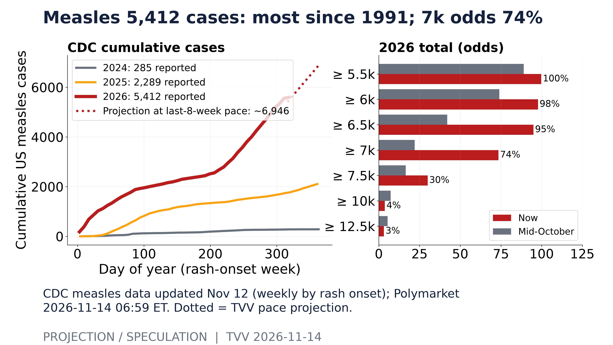
Measles 5,412 cases: most since 1991; 7k odds 74%. CDC measles data updated Nov 12 (weekly by rash onset); Polymarket 2026-11-14 06:59 ET. Dotted = TVV pace projection. [Projection/Speculation; data as of 2026-11-12] Source: cdc.gov data page
8. Gold and Silver and Commodities
- ★ Week: Brent settled at $95.84 and WTI at $88.56 Friday, both down about 2.5% for the week, their second weekly drop. The IEA said world oil supply jumped 2.3 million barrels a day in October to 105.4 million, putting the market in surplus for the first time since the war began. Gold ended the week 4.55% lower at $3,879.70 for the front month, its biggest weekly drop since June and 27% below January's record $5,318.40. Silver fell 1.9% Friday to $49.12 and copper 1.7% to $6.09 a pound. DTN · Morningstar / Dow Jones · The Edge
- ★ Forecast: the EIA's November outlook sees Brent spot falling from a $123.93 average in October to $104 in November, $99 in December and $75 by end-2027 (see graph). October's physical spot averaged about $16 above futures, a sign of tight prompt supply. Implication: the official forecast expects prices to ease, with Hormuz claims as the upside risk. EIA STEO
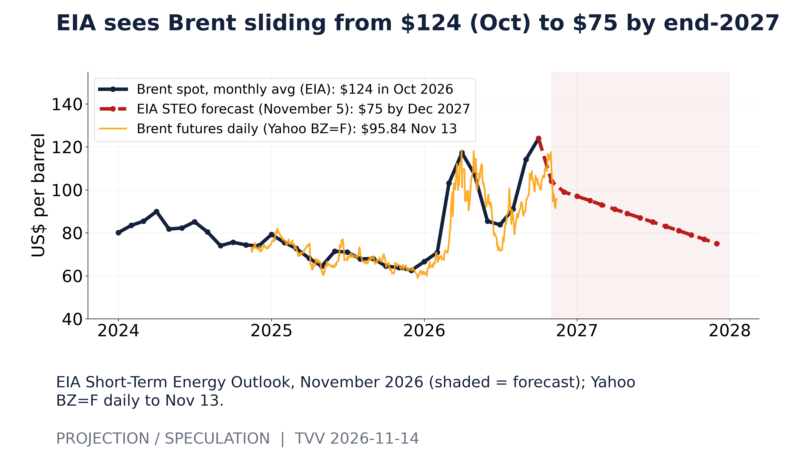
EIA sees Brent sliding from $124 (Oct) to $75 by end-2027. EIA Short-Term Energy Outlook, November 2026 (shaded = forecast); Yahoo BZ=F daily to Nov 13. [Projection/Speculation; data as of Thursday, November 5, 2026] Source: eia.gov data page
9. Stock Averages and Nasdaq Major Movers
- ★ Week: the S&P 500 rose 2.5% to 7,561.67, the Dow 2.1% to 52,347.55 and the Nasdaq 2.3% to 25,136.27, the first winning week since early October and the best since August, despite Friday's dip (S&P −0.4%, Nasdaq −0.9%) led by AI stocks. The Philadelphia semiconductor index fell 3.4% Friday. Airline shares dropped late after the FAA ground stop. Bitcoin was near $68,000, down about 9% on the week. AP · CNBC · Reuters / Euronext · Smart Pro News
- ★ Leaders and laggards since the Oct 6 S&P 500 closing high of 7,819: semiconductors (SMH) −23%, technology −15.7% and the Nasdaq 100 −10.5%, while health care gained 13%, consumer staples 12.9% and financials 8.6%; the equal-weight S&P is up 4.2% against −3.2% for the cap-weighted index (see graph). The 2026 race on Polymarket: the S&P 500 is 91.5% to beat gold and Bitcoin, up from 68.5%, with the S&P +10.5% year to date, gold −10.5% and Bitcoin −24.3% (see graph). Yahoo Finance · Polymarket
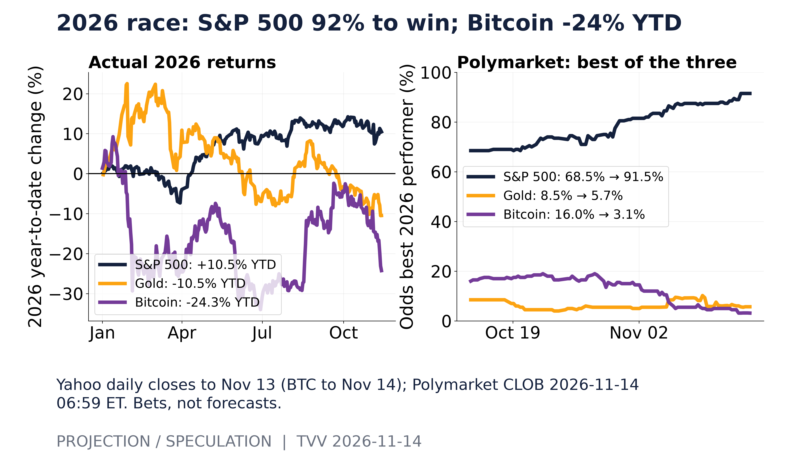
2026 race: S&P 500 92% to win; Bitcoin -24% YTD. Yahoo daily closes to Nov 13 (BTC to Nov 14); Polymarket CLOB 2026-11-14 06:59 ET. Bets, not forecasts. [Projection/Speculation; data as of 2026-11-14 06:59 ET] Source: polymarket.com data page
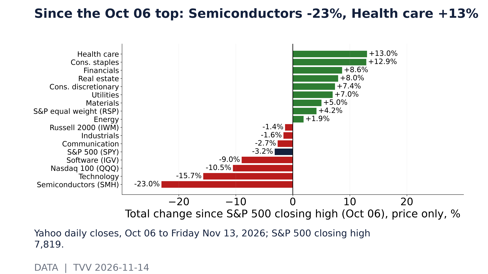
Since the Oct 06 top: Semiconductors -23%, Health care +13%. Yahoo daily closes, Oct 06 to Friday Nov 13, 2026; S&P 500 closing high 7,819. [Data; data as of 2026-11-13] Source: query1.finance.yahoo.com data page
10. Polymarket and Kalshi Sentiment Highlights
- ★ Biggest swings of the week among Polymarket markets with over $1 million traded: odds that Bitcoin dips to $65,000 in 2026 jumped 51 points to 80%, Ethereum to $1,750 rose 39 points to 60%, Bitcoin to $60,000 rose 28 points to 46%, and Apple as the largest company at year-end rose 26 points to 90% (see graph). Implication: money moved toward a crypto drawdown and away from Nvidia's crown. Polymarket · Polymarket
- ★ Fed scorecard: CME futures price a December hike as certain, matching Polymarket's roughly 97% for another 2026 hike, which rose 21 points in a week. CNBC · Polymarket
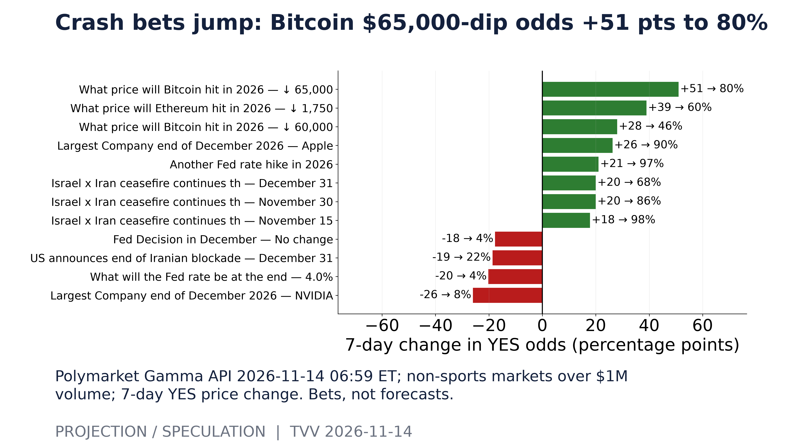
Crash bets jump: Bitcoin $65,000-dip odds +51 pts to 80%. Polymarket Gamma API 2026-11-14 06:59 ET; non-sports markets over $1M volume; 7-day YES price change. Bets, not forecasts. [Projection/Speculation; data as of 2026-11-14 06:59 ET] Source: polymarket.com data page
11. Tech-Metrics
- ★ Nvidia succession: the Financial Times reports the board approached Arm CEO Rene Haas, a former Nvidia executive, about succeeding Jensen Huang; the board told CNBC it is still choosing a search firm, has not formally engaged any candidate and calls speculation premature. Shares fell more than 2% Friday, taking the market value below $4 trillion. Three House committees and the Senate Banking Committee are seeking briefings from Huang. Polymarket's next-CEO market: Haas 27.8%, Ian Buck 15%, interim CEO Colette Kress 11.1% and no change 8.6% (see graph). CNBC · Financial Times · Polymarket
- ★ Catalyst Tuesday: Nvidia reports October-quarter results Nov 17 after the close, guided near $108 billion. Over the last 16 reports the next-day move averaged ±6.7%, eight up and eight down, from +24.4% in May 2023 to −8.5% in February 2025 (see graph). Implication: a swing of that size is normal even without this week's leadership shock; the stock closed at $162.85, 32% below its 2026 high. Nvidia IR · SEC EDGAR
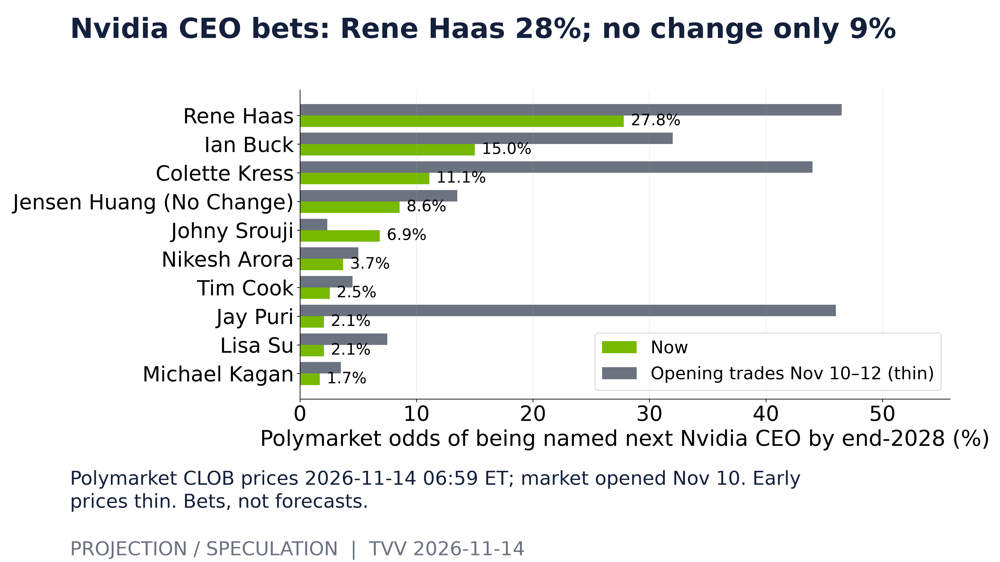
Nvidia CEO bets: Rene Haas 28%; no change only 9%. Polymarket CLOB prices 2026-11-14 06:59 ET; market opened Nov 10. Early prices thin. Bets, not forecasts. [Projection/Speculation; data as of 2026-11-14 06:59 ET] Source: polymarket.com data page
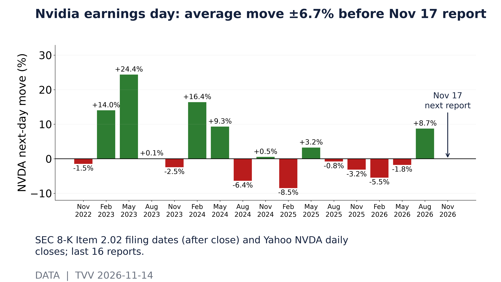
Nvidia earnings day: average move ±6.7% before Nov 17 report. SEC 8-K Item 2.02 filing dates (after close) and Yahoo NVDA daily closes; last 16 reports. [Data; data as of 2026-11-13] Source: data.sec.gov data page
12. AI Hypergrowth Risks
- ★ Concentration: Microsoft, Alphabet, Amazon and Meta spent $202 billion on capital projects in the third quarter, up from $34 billion in early 2023, against Nvidia revenue of $96.2 billion in its July quarter (see graph). A capex pause by a handful of buyers would hit chip demand first. Anthropic's IPO is set to price Nov 18 at $70–78 a share, with Nasdaq trading as ANT from Nov 19. SEC EDGAR · Anthropic · Yahoo Finance
- ★ Model race: Polymarket gives 86.5% that Google holds the top AI model at end-November, up from 54% in mid-October, but only 16% that a Chinese lab holds a top-3 model on Dec 31 (23.5% before) and 6.5% for a new Gemini Pro by year-end (see graph). Implication: bettors expect today's leaderboard to hold. AI risk management, including model testing, human control and an incident-reporting channel, is expected on the Trump–Xi agenda. Polymarket · Polymarket · VOA
- ★ AI adoption: Anthropic opened a Claude Meetings beta for Team and Enterprise users and a private beta of self-hosted managed agents, and OpenAI began selling ChatGPT Enterprise through AWS Marketplace. hayami AI daily
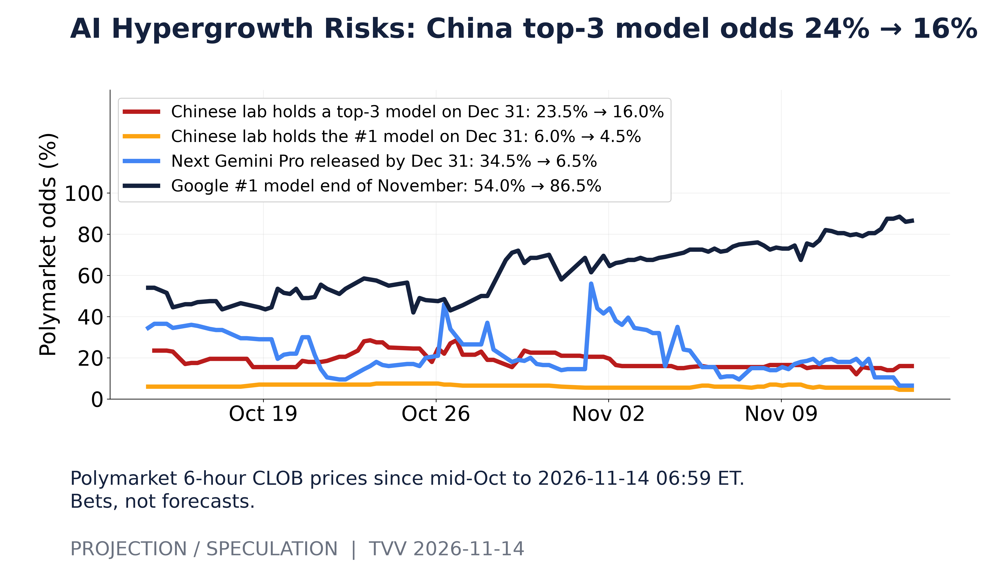
AI Hypergrowth Risks: China top-3 model odds 24% → 16%. Polymarket 6-hour CLOB prices since mid-Oct to 2026-11-14 06:59 ET. Bets, not forecasts. [Projection/Speculation; data as of 2026-11-14 06:59 ET] Source: polymarket.com data page
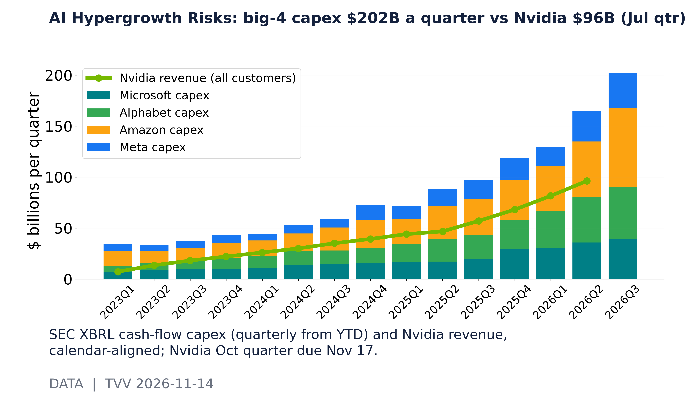
AI Hypergrowth Risks: big-4 capex $202B a quarter vs Nvidia $96B (Jul qtr). SEC XBRL cash-flow capex (quarterly from YTD) and Nvidia revenue, calendar-aligned; Nvidia Oct quarter due Nov 17. [Data; data as of 2026Q3] Source: data.sec.gov data page
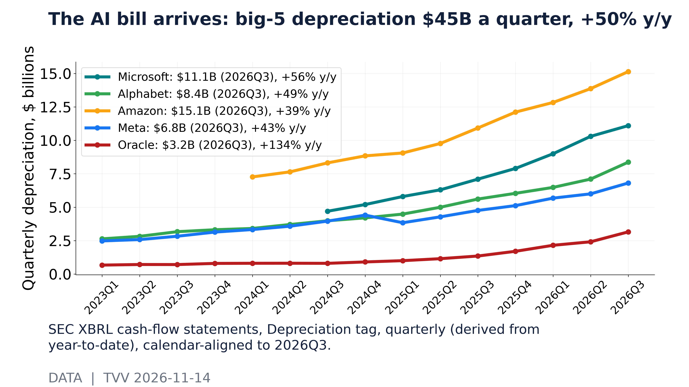
The AI bill arrives: big-5 depreciation $45B a quarter, +50% y/y. SEC XBRL cash-flow statements, Depreciation tag, quarterly (derived from year-to-date), calendar-aligned to 2026Q3. [Data; data as of 2026Q3] Source: data.sec.gov data page
Prioritized Risk Summary November 14, 2026
| Sections Ranked for Importance Today | |
|---|---|
| INFRA | FAA halts all US departures for hours as old systems fail |
| GEOPOL | Ukraine and Russia set swap of 1,200–1,300 prisoners each |
| TERROR | Car bomb kills five at Balochistan checkpoint |
| ECONOMY | Markets see a December Fed rate hike as certain |
| TECH | Nvidia CEO search open as results loom Nov 17 |
| AI BOOST | Big-4 capex hits $202 billion a quarter |
| HEALTH | Ebola in Congo still adds 400–500 cases a week |
| METALS | Oil falls 2.5% for the week; gold has worst week since June |
| STOCKS | S&P 500 gains 2.5% for the week; chips lag |
| ODDS | Bitcoin $65,000-dip odds jump to 80% |
| SPACE | Quiet sun; cycle 25 fading from its 2024 peak |
| QUAKES | No damaging M6+ quake; M7 count near average |
TECHVESTVENTURES ACTION-ALERT — November 14, 2026 see all graphs click TVV Risk Center
EDITOR — Michael Hentschel
Most news events require or spawn no action or reaction, some (but not many) are or become warnings. We draw attention to substantial lifestyle risks and market risks in particular, some created by Mid-Term Vote anxieties, Middle East tensions, vast over-indebtedness globally, and other events we track. Longer term but capable of causing sudden power surges as serious as the Carrington Event. Climate instability occasioned by long-term cyclical solar electro-magnetic flares, is becoming much more prominent and even more likely. New AI predictive analytics and pattern seekers are pointed in some of these directions, and we monitor imminent likelihood. Some readers might hedge and others might see opportunity. The above is not investment advice.